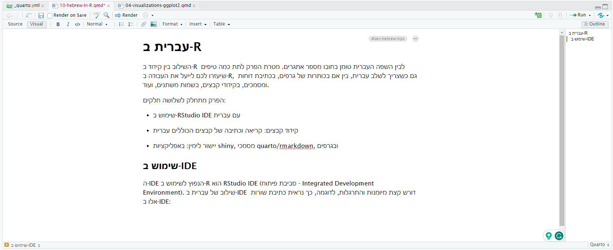
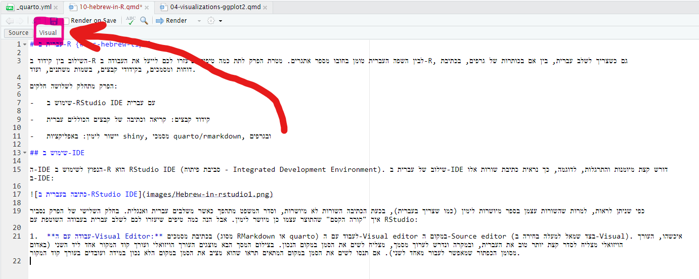

library(tidyverse)10 עברית ב-R
השילוב בין קידוד ב-R לבין השפה העברית טומן בחובו מספר אתגרים. מטרת הפרק לתת כמה טיפים שיעזרו לכם לייעל את העבודה ב-R, גם כשצריך לשלב עברית, בין אם בכותרות של גרפים, בכתיבת דוחות ומסמכים, בקידודי קבצים, בשמות משתנים, ועוד.
הפרק מתחלק לשלושה חלקים:
שימוש ב-RStudio IDE עם עברית
קידוד קבצים: קריאה וכתיבה של קבצים הכוללים עברית
יישור לימין: באפליקציות shiny, מסמכי quarto/rmarkdown, ובגרפים
10.1 שימוש ב-IDE
ה-IDE הנפוץ לשימוש ב-R הוא RStudio IDE (סביבת פיתוח - Integrated Development Environment). שילוב של עברית ב-IDE דורש קצת מיומנות והתרגלות, לדוגמה, כך נראית כתיבת שורות אלו ב-IDE:

כפי שניתן לראות, למרות שהשורות עצמן בספר מיושרות לימין (כמו שצריך בעברית), בכעת הכתיבה השורות לא מיושרות, וסדר המשפט מתהפך כאשר משלבים עברית ואנגלית. בחלק השלישי של הפרק נסביר איך “קורה הקסם” שהתוצר עצמו כן מיושר לימין. אבל הנה כמה טיפים שיעזרו לכם לשלב עברית בעבודה השוטפת עם RStudio:
- עבודה עם ה-Visual Editor: בכתיבת מסמכים (מסוג RMarkdown או quarto) לעבוד עם ה-Visual editor במקום ה-Source editor (בצד שמאל למעלה בחירה ב-Visual). איכשהו, העורך הויזואלי מצליח לסדר קצת יותר טוב את העברית, ובמקרה ונדרש לערוך מסמך, מצליח לשים את הסמן במקום הנכון. בצילום המסך הבא מוצג עורך קוד המקור (באדום מסומן הכפתור שמאפשר לעבור לעורך הויזואלי). אם תנסו לשים את הסמן במקום המתאים בעורך קוד המקור תראו שהוא מציב את הסמן במקום הלא נכון.

לצערנו, העורך הויזואלי זמין רק במסמכים מסוג RMarkdown ו-quarto. בכתיבת סקריפט רגיל (קובץ קוד בלבד עם סיומת .R), חייבים להשתמש בעורך קוד המקור, מה שמוביל אותנו לנקודה השניה:
- שימוש בשבירת שורות כשנדרש לשלב עברית בקוד: כאשר כותבים קוד ונדרש לשלב עברית, עדיף לשבור שורה (בכתיבת קוד לרוב שבירת שורה לא משפיעה על הפונקציונליות של הקוד), ואת העברית לשים בשורה נפרדת. זה יקל על עריכת הקוד במידה וצריך. לדוגמה, הקוד הבא מכיל שבירת שורה, ולכן יקל על עריכות במידה ונדרשות:
my_table %>%
filter(my_var ==
"המשתנה שלי")במקום הקוד:
my_table %>%
filter(my_var == "המשתנה שלי")- שמירת קבצים באנגלית: תעשו לעצמכם ולאחרים טובה, ולכל הקבצים (והתיקיות) תתנו שמות באנגלית ולא בעברית.
- שמות משתנים באנגלית: אם יש לכם קובץ נתונים שבו שמות המשתנים (הכותרות) הם בעברית, מומלץ להעביר את כולם לאנגלית, לעבוד באנגלית, ואם צריך להעביר לעברית בסוף (לצורך דיווח ו/או תרשימים). יש דרכים שונות להחליף שמות, לדוגמה הגדרה בתוך הפקודה שקוראת את הקובץ. הפקודה
read_csvו-readxl::read_excelתומכות שתיהן בארגומנט שנקראcol_namesומאפשר להגדיר שמות (אבל השימוש בארגומנט מניח שסדר העמודות עקבי וידוע מראש). הדוגמה הבאה מחליפה שמות של עמודות באמצעות הפקודהrename, שמגדירה שם של עמודה באופן מדויק, גם אם הסדר שלהן אינו לפי סדר ההגדרה.
init_tbl <- tibble(`שם` =
c("איתן",
"נעמי",
"אביב"),
`גיל` =
c(11, 9, 5))init_tbl# A tibble: 3 × 2
שם גיל
<chr> <dbl>
1 איתן 11
2 נעמי 9
3 אביב 5init_tbl %>%
rename(age = `גיל`,
name = `שם`)# A tibble: 3 × 2
name age
<chr> <dbl>
1 איתן 11
2 נעמי 9
3 אביב 5שימו לב אגב שבפלט הטקסט בעברית מופיע הפוך, אבל העתיקו את הקוד ונסו. ניתן להשתמש בפקודה View על מנת לראות את התוצר הסופי בצורה מסודרת (פשוט הוסיפו %>% View() בסוף השורה האחרונה של הקוד).
10.2 קידוד קבצים
קבצי טקסט בפורמטים שונים (כגון txt או csv) יכולים להכיל אינדיקציה לקידוד, שמאפשרת לתוכנות שונות (ביניהן R ו-Excel) להבין איך לפתוח את הקובץ כך שניתן יהיה לקרוא אותו באופן תקין.
10.2.1 קריאת קבצים
נתייחס לפקודת read_csv (פקודות אחרות בחבילת readr עובדות באופן דומה). כברירת מחדל, הפקודה תצליח לקרוא טוב קבצים ששמורים עם קידוד של UTF-8, ולרוב הקבצים זה מספיק.
במידה והקריאה אינה עובדת, ניתן להיעזר בפקודה guess_encoding גם היא מחבילת readr.
לדוגמה:
guess_encoding("files/utf8_encoding_example_file.csv")# A tibble: 2 × 2
encoding confidence
<chr> <dbl>
1 UTF-8 1
2 KOI8-R 0.98ניתן לראות שהפקודה guess_encoding מצליחה לזהות שהקידוד הוא UTF-8, וקריאה “רגילה” של הקובץ (בלי ארגומנטים מיוחדים) תצליח:
read_csv("files/utf8_encoding_example_file.csv")# A tibble: 2 × 1
שלום
<chr>
1 יום
2 טוב לעומת זאת, הקובץ הבא מקודד בקידוד אחר (קידוד iso8859-8), הפקודה guess_encoding מזהה קידוד שגוי, והשימוש בו לא יניב תוצאות רצויות:
guess_encoding("files/iso8859-8_encoding_example_file.csv")# A tibble: 1 × 2
encoding confidence
<chr> <dbl>
1 windows-1251 0.5read_csv("files/iso8859-8_encoding_example_file.csv",
locale = locale(encoding = "windows-1251"))# A tibble: 2 × 1
щмен
<chr>
1 йен
2 иеб הקובץ הראשון מקודד ב-UTF-8 ולכן שימוש פשוט בפקודה read_csv קורא אותו באופן תקין. הקובץ השני שמור בפורמט ISO-8859-8 (והפקודה גם לא מצליחה “לנחש” אותו), ולכן יותר מאתגר לקרוא אותו בלי ידע מוקדם על הקידוד. הפעלת פקודת הקריאה על הקובץ השני מבלי הגדרה מתאימה של הקידוד, תציג טקסט שגוי או הודעת שגיאה של Error: Invalid multibyte sequence. הטקסט בעברית בדוגמאות להלן יופיע משמאל לימין (הפוך), אבל אם תנסו להריץ אותו ב-R תראו שהנתונים נקראים באופן תקין, בפקודה הראשונה והשלישית להלן:
read_csv("files/iso8859-8_encoding_example_file.csv",
locale = locale(encoding = "ISO-8859-8"))# A tibble: 2 × 1
שלום
<chr>
1 יום
2 טוב לידיעה, יש מספר פורמטים רלוונטיים לקריאת עברית, הראשונים שאני ממליץ לנסות הם UTF-8 (כלומר בלי ארגומנטים מיוחדים), אחריו Windows-1255, ואחריו ISO-8859-8, כמובן תוך שילוב הפקודה guess_encoding שיכולה להיות שימושית לעיתים.
10.2.2 שמירת קבצים
על מנת לשמור קבצים עם קידוד, מומלץ להשתמש בפקודה write_excel_csv במקום הפקודה write_csv, במיוחד אם מתכננים לקרוא את הקובץ שנשמר באמצעות אקסל. הפקודה של write_excel_csv כוללת “הנחיות קידוד” כך שפתיחה באקסל תציג עברית באופן תקין (התוצר הוא עדיין קובץ טקסט). לעומת זאת, שמירה של write_csv עם נתונים בעברית, תציג ג’יבריש בעת פתיחת אקסל רגילה (אגב, אפשר לייבא נתונים באקסל ולהגדיר UTF-8 כקידוד, ואז ניתן לקרוא גם קבצים כאלו באופן תקין).
Note
פורמט אקסל (קובץ xlsx) הוא פורמט נוח מבחינת קידוד, משום שהוא שומר את הקידוד באופן מובנה. עם זאת, הוא פורמט פחות נוח לעבודה בהרבה מקרים. ניתן לקרוא קבצי אקסל באמצעות readxl::read_excel ואז לא צריך להתעסק עם קידוד. שמירה של קבצי אקסל תיעשה באמצעות אחת מהפקודות הבאות openxlsx::write.xlsx או writexl::write_xlsx.
לא נכביר במילים על הבעיות שיש עם אקסל וקבצי דאטה, אבל לא חסרות כאלו (לדוגמה, ההתייחסות של אקסל לכל דבר שרק “נראה כמו תאריך” כתאריך, הגמישות לתת למשתמשים להפוך את הקובץ ל-untidy כמו לדוגמה על ידי מיזוג תאים, או קידוד משמעויות שונות באמצעות צביעה, מה שכמובן מקשה על עבודת מדען הנתונים).
10.3 יישור לימין
תוצרים ב-R המבוססים על html, קרי, מסמכים שהם תוצר של RMarkdown, quarto, ואפליקציות shiny, יציגו עברית בכיוון הפוך (משמאל לימין), אלא אם יוגדר להם עיצוב מתאים.
עיצוב ב-html נשלט על ידי קוד CSS (Cascade Style Sheet). לדוגמה, לספר זה יש עיצוב המוגדר בקובץ style.css ובו מופיע (בין היתר) הקוד הבא:
body {
direction: rtl;
}הקוד שולט בכל התגיות שנמצאות בתוך גוף המסמך (תגיות html שמופיעות בין <body> לבין התגית הסוגרת </body>. התכונה אותה אנחנו רוצים לעדכן נקראת כיוון (direction), והוא יכול לקבל שני ערכים (כברירת מחדל שמאל לימין ltr, ובאמצעות הקוד אנחנו משנים אותו ל-rtl.
בשביל להטמיע זאת במסמך quarto או RMarkdown רק צריך להוסיף את הקוד הבא במסמך:
```{css}
body {
direction: rtl;
}
```ניתן לקרוא מידע נוסף לגבי שילוב CSS במקורות הבאים:
10.4 סיכום
בפרק זה למדנו טיפים וטריקים שיעזרו לנו בפרויקטים בהם עלינו לשלב עברית ואנגלית. בפרט:
שימוש בסביבת הפיתוח RStudio תוך שילוב עברית.
קידודים של קבצים בעברית (בקריאה ובכתיבה של קבצים).
יישור לימין בתוצרי ניתוח שכוללים html, באמצעות שימוש ב-CSS.
המדריך העברי למשתמש ב-R נכתב על ידי עדי שריד בהוצאת מכון שריד